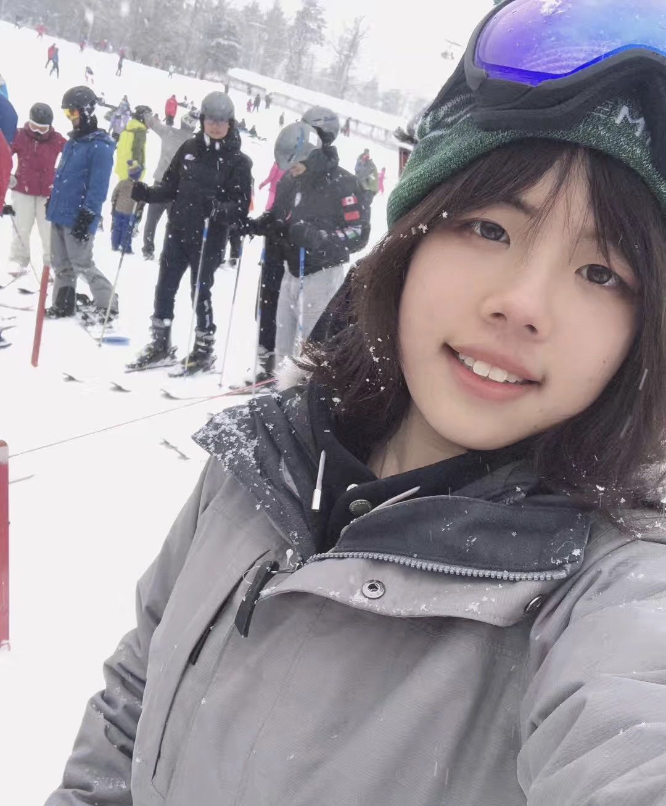

Hello Everyone! Welcome to my personal website. My name is Wanyi Wang, and I currently live in Boston. I'm passionate about maths and science, especially physics. I'd like to persue a future career in engineering. As you can tell from the home page, I'm creating this website for the Digital Fabrication course in Summer 2020. The main reason why I was attarcted to this course was its perfect combination between creativity and science. I'm so excited about this course because this would be the first time ever for me to present my design physcically. I also have an art and design background, studying drawing and painting since elementary school. my favourite class at my high school is Architecture, which, to some extent, led me to this course to further develop my skills in CAD modeling.
My ultimate goal is to become an interesting person, which to my involves a lot of different aspects. I never hezitate to learn new skills and develop more hobbies. I love playing guitar, skating, skiing, drawing etc. I love travelling and learning about different cultures, and fun fact, my absolute favourite city in the world is Abu Dhabi. I love meeting people from different background during my trip. I trully believe that understanding cultural difference and humanity is a significant part of the job as an engineer.
Well, that was a lot of random information about myself. Thank you so much for visiting my website! I hope you enjoy it and please feel free to contact if you have any questions or concerns.
Email me: wanyi020507@gmail.com
